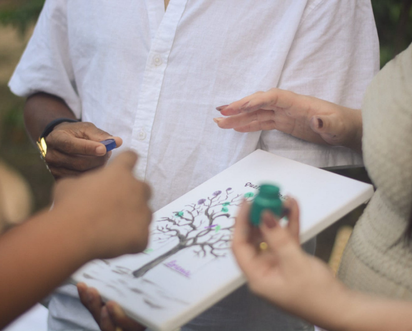
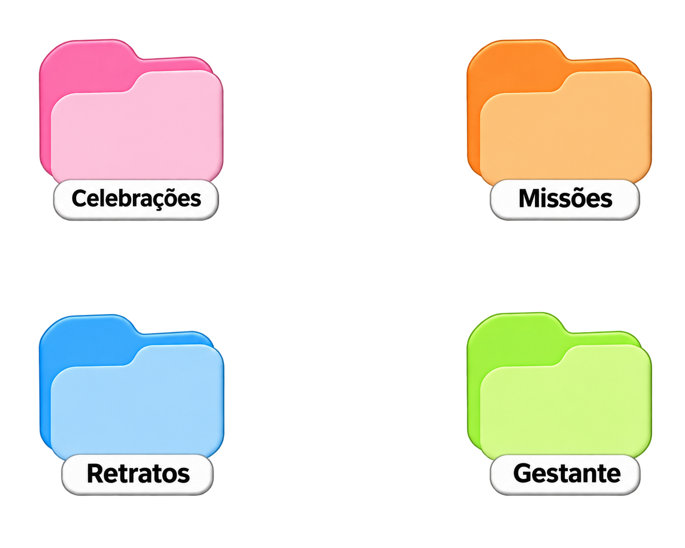
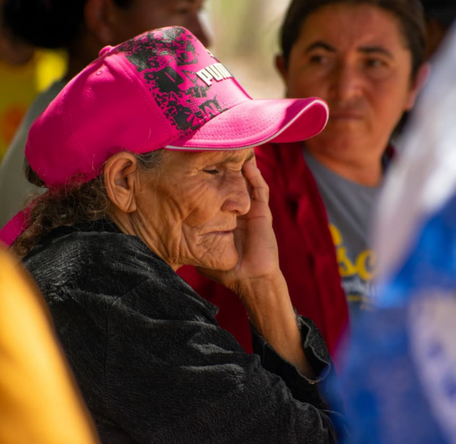
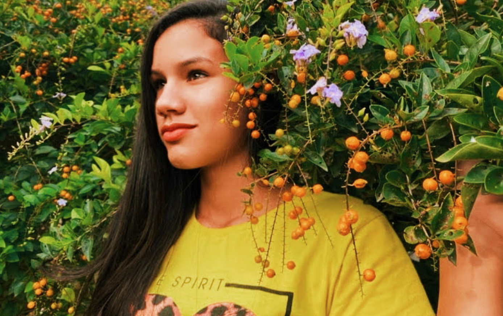

Entre pessoas queridas, sempre existe uma história acontecendo.
 VITÓRIA ALCANTARA
VITÓRIA ALCANTARA
FOTOGRAFIA COM PRESENÇA
Um olhar atento para gente de verdade, encontros e momentos que merecem ficar.
CONHEÇA MEU TRABALHOMEMÓRIAS COM ALMA, DESDE 2015

por trás01 / 04 UM INSTANTE, DO JEITO QUE ELE FOI
.png) FIG. 01 — UM POUCO DE MIM
FIG. 01 — UM POUCO DE MIM
PRAZER, SOU A VITÓRIA
Minha trajetória na fotografia começou aos 12 anos. Desde então, procuro capturar a essência de cada história com sensibilidade, curiosidade e afeto.
Fotografo pessoas, encontros e momentos especiais — dos retratos sem pressa às celebrações e experiências que conectam a gente.
VAMOS CRIAR UMA MEMÓRIAFEITO COM TEMPO E INTENÇÃO
Cada encontro tem seu ritmo.
Meu trabalho é estar presente
para
perceber o que faz dele único.

Entre pessoas queridas, sempre existe uma história acontecendo.

Um retrato também é um jeito de dizer: eu te vejo.
Os detalhes pequenos acabam contando as maiores histórias.

Um instante real, guardado com carinho e sem pose.
HISTÓRIAS REAIS, SEM PRECISAR ENSAIAR.
TEM UMA HISTÓRIA PRA CONTAR?
Me conta o que você está imaginando.
A gente pensa no resto com
calma.